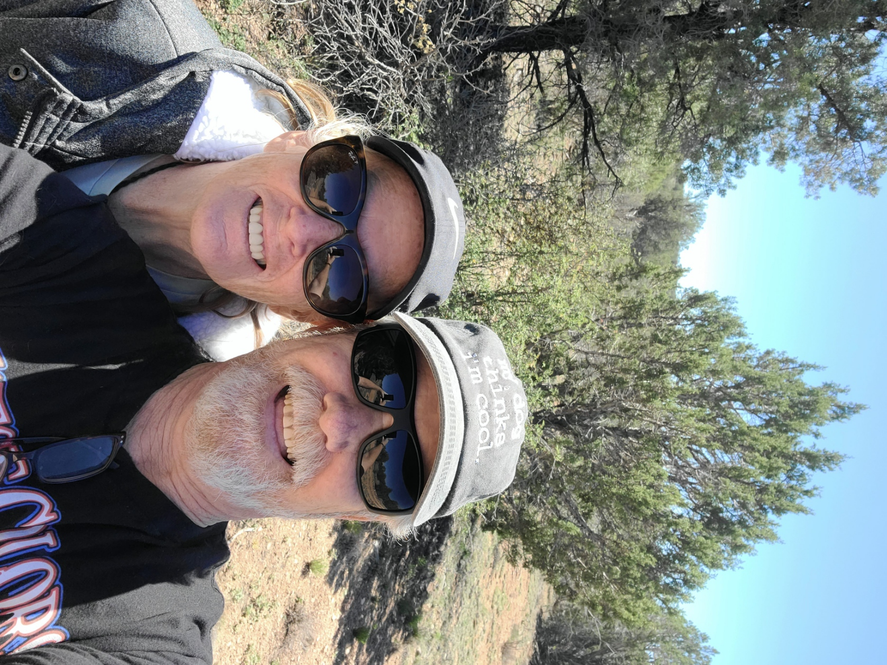

The Reignite Program
A coaching program for couples 50+ who are ready to stop being roommates and start being in love again — more connection, more fun, and yeah, better sex.
Get the Free Guide →If This Is You, Keep Reading
Not because anything's wrong, exactly. The bills are paid. The kids turned out great. You still love each other — of course you do.
But somewhere between the soccer practices and the school fundraisers and the 2 a.m. fevers, you stopped being you two and became "Mom" and "Dad." And now Mom and Dad are sitting at a table that used to have four chairs filled, and it's quiet, and one of you finally says, "So… what do you want to do this weekend?" and the other one shrugs.
That's the moment. That's the one nobody warns you about.
You spent two decades pouring everything into raising those kids — and you'd do it again in a heartbeat. But nobody told you that when they left, they'd take the easy conversation topics with them. Nobody told you that you'd look across the bed at the person you've slept next to for thirty years and feel a little bit like strangers.
If that's hitting a nerve right now — good. Keep reading. Because this is exactly what we help with.
Here's What Most People Get Wrong
For 20-plus years, your entire relationship had a job. The job was raising humans. And you were good at it — you were a team, you had a mission, you knew exactly what you were doing every single day. The marriage ran in the background while the family ran in the foreground.
Then the job ended. The kids walked out the door with their laundry baskets and their futures, and suddenly the background became the foreground. You looked at your marriage in the bright light for the first time in years and went, "Oh. We haven't really tended to this in a while."
That's not failure. That's just what happens to good people who got busy loving their kids.
But here's the part that stings: most couples don't fix this. They just quietly accept it. They become polite. They coexist. They turn into people who love each other but stopped liking being together. They settle for "fine."
"Fine" is the most dangerous word in a 30-year marriage.
You don't need saving. You're not broken. You just need to give this relationship a job again — a new one. And that's where we come in.
Our Approach
We're Billy and Maryruth. We're not going to put you on a couch and ask about your childhood. We're a real married couple who hit this exact wall ourselves — and clawed our way to the other side, where we genuinely have more fun, more connection, and (we'll just say it) a better sex life than we did in our 30s. Now we help other couples do the same.
We keep it casual, honest, and funny — because real reconnection happens when you're laughing, not when you're filling out worksheets.
This isn't about fixing the husband or fixing the wife. It's the two of you, as a team, rebuilding something together. Just like you did with the kids — except this time the project is you.
We bring a spiritual foundation to everything we do, without getting preachy. Purpose and passion belong in the same conversation.
We give you the tools, the framework, and the honest conversations you've been avoiding — and we walk through it with you. No fluff. No homework that takes over your life. Just real momentum, starting in the first week.
What's Included

This chapter — the one after the kids leave — can be the best one of your marriage. We mean that.
— Billy & Maryruth Mitchell
Let's Be Honest Up Front
We'd rather be honest with you up front than take your money and waste your time. If you're not a fit, no hard feelings — we'll still be cheering for you.
The Transformation
That's not a fantasy. That's just what happens when you stop coasting and start choosing each other again. We've watched it happen over and over.
Why We Do This
A few years back, our youngest moved out, and within about a month we realized we'd become strangers who shared a mortgage. We were polite. We were "fine." And we were quietly miserable.
One night Billy finally said it out loud: "I don't know who we are anymore without the kids." Maryruth burst into tears — she'd been thinking the exact same thing and was too scared to say it.
That was the bottom. But it was also the beginning. We did the work — real, awkward, sometimes hilarious work — and today we genuinely have more fun, more connection, and a better marriage than we did in our 30s.
We're not selling you a fantasy — we're living proof. And we'd love to help you get there too.
Questions? We've Got You.
Nope. We're coaches, not clinicians — we won't psychoanalyze you or dig through your childhood. We give you practical tools and walk alongside you. If something comes up that needs a licensed therapist, we'll tell you straight.
It can — a lot of our couples start with one excited partner and one skeptic. We're pretty good at winning over the skeptic, mostly because this doesn't feel like the thing they were dreading. But both of you do eventually have to show up. We'll help with that.
Not at all. Faith is part of our foundation, but we're not here to convert you or quote scripture at you. Couples of all kinds — and all levels of faith — fit right in here.
That's literally who we built this for. This isn't for newlyweds — it's for couples who've got decades together and a whole beautiful chapter still ahead. You're not too old. You're right on time.
A couple of hours a week. This isn't a second job — it's protecting a little space for the most important relationship you've got. We designed it to fit a real life, not take it over.
Only as much as you want to. But we'll be honest — it's one of the things couples are most relieved to finally talk about, in a way that isn't clinical or cringey. No pressure, no shame, just real talk.
This works when you actually do the work — that's true of anything worth doing. We pour everything into you; what we can't do is want it more than you do. Show up, lean in, and if it's still not landing, we'll talk it through with you personally.
Grab our free guide first, or book a no-pressure call and we'll figure out if we're a fit together. No countdown timers, no hard sell. Just a conversation between couples.
One Small Step
Nothing changes if nothing changes.
That quiet dinner table will still be quiet next month. And the month after that. The empty nest doesn't fix itself — it just slowly becomes the new normal, and "fine" hardens into "this is just how it is now." We've seen too many good couples let twenty more good years slip by on autopilot.
You don't have to be one of them.
You've already done the hard part — you've stayed. You built a family, you went the distance, you're still here, still together. Now it's time to come back to each other.
We'd love to walk this one with you.
— Billy & Maryruth